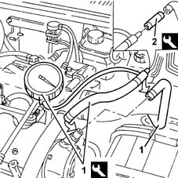

3330DA Check operation of brake servo vacuum circuit and vacuum unit
- Path
- Test > 33 BRAKING SYSTEM > 3330 HYDRAULIC BRAKING SYSTEM > 3330D brake vacuum system > 3330DA Check operation of brake servo vacuum circuit and vacuum unit
- Kind
- test / check procedure
- Applies to
- engines: 1.9 JTD 8v , 2.4 JTD 10v; all production periods
- Interactive page
- https://sloeber94.github.io/elrnDB-a156/en/#/3239169
Applies to: engines: 1.9 JTD 8v , 2.4 JTD 10v; all production periods
Fully depress the brake pedal repeatedly to completely drain the vacuum circuit.
Disconnect the pipe connected to the brake servo from the vacuum unit and connect the tool.
 | Name | Country |
|---|---|---|
1 | Vacuum gauge | 1.895.899.001 |
Start up the engine and, after 20 seconds (with the engine idling), check, on the vacuum gauge, that the pressure is > 0.6 bar.
If the value measured is less than 0.6 bar or close to 0.9 bar, disconnect the vacuum gauge pipe from the brake servo pipe.
Fit the special plug for the tool on the vacuum gauge pipe.
| Name | Country |
|---|---|---|
2 | Vacuum gauge | 1.895.899.001 |
Start up the engine and, after 20 seconds, check, the the vacuum gauge, that the reading is above 0.6 bar:
- if this is the case, the fault should be sought in the vacuum circuit or in the brake servo
- if this is not the case, the vacuum unit is faulty.
